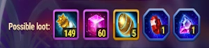

This guide shows a coordinated three-player approach to clear Adventure Map #4 Fall of the Celestial City
in Hero Wars: Dominion Era. Follow assigned routes, capture buff nodes together, and destroy the key towers (19 & 21)
before engaging the boss the boss becomes much easier once those towers are down.
PET Adventure Map #4 – Fall of the Celestial City
- Map number: 4
- Map name: Fall of the Celestial City
- Minimum Hero Level: 55+
- Recommended Total Power: 61,000+
This map benefits from coordinated play. Three players should each take one of the preset routes (Blue / Yellow / Green).
Prioritize capturing buff nodes, then take towers in order of importance (towers that buff the boss first). Always wait for teammates
at buff points contested captures or solo pushes waste action points and risk the run.
Map Details
Map number: 4
Map name: Fall of the Celestial City
Recommended Team Level: 55
Recommended Total Team Power: 61,000
Possible Loot
Completing Adventure Map #4 Fall of the Celestial City rewards players with valuable pet resources and upgrade materials.
These drops can help strengthen your pets, unlock new ones, and advance your guild’s overall power. Below is the full list
of possible loot you can obtain from this map.
PET Potion: 149
Chaos Particle: 60
PET Summoning Sphere: 5
Uncommon Duckstone: Khorus, Cain
Uncommon Dawnstone: Biscuit, Axel
Map #4 - Possible Loot

Boss Boost
The boss in Adventure Map #4 Fall of the Celestial City comes with several powerful buffs that make the fight
much more challenging. Understanding these boosts is essential for planning your strategy, as they significantly
increase the boss’s survivability and offensive potential. Below is the complete list of boosts you will face in this encounter.
Boss Boosts applied on this map:
- Increases damage dealt by 25%
- Decreases damage taken by 25%
- Multiplies Health by 10
- Increases energy gain by 100%
- Decreases debuff duration by 80%
- No attack can damage the boss for more than 1% of max Health
- Immune to energy reduction skills
Boss Damage Reduction (Map Mechanics)
In addition to the standard boosts, the boss in Adventure Map #4 has extra defensive mechanics tied to specific towers.
These towers grant the boss massive damage resistance, making it nearly impossible to defeat without removing the buffs first.
Coordinating with your teammates to take down these objectives is crucial for a successful run.
Damage Resist Decreases damage taken by 60%. To remove this buff from the BOSS you must defeat the corresponding squads:
- Beat Squad 19: Eye of Harbinger to remove one 60% damage resist buff from the boss.
- Beat Squad 21: Eye of Harbinger to remove the other 60% damage resist buff from the boss.
Important: Towers 19 and 21 MUST be destroyed before fighting the boss to reduce its strength. Wait for your teammates to destroy these towers do not engage the boss alone while those towers remain active.
Conclusion
Adventure Map #4 rewards teamwork and timing. Follow the assigned Blue / Yellow / Green routes, secure buff nodes together,
and prioritize destroying towers that empower the boss (especially towers related to squads 19 and 21). With communication, efficient action point use,
and synchronized strikes, your group can beat this map even if you are slightly under the recommended total power.
After a couple of runs, adjust routes to match your guild’s hero pools and strategies sometimes swapping which player takes which path
based on available heroes and pet patronages will improve success rate.
Good luck coordinate, communicate, and crush the Celestial City!
Guide prepared for Alexandre Games adapt it to your team and playstyle as needed.


 Pet Adventure Map #2 - Valley of the Elements Guide
Pet Adventure Map #2 - Valley of the Elements Guide
 How to Progress in Adventure Map 3 for Hero Wars: Dominion Era
How to Progress in Adventure Map 3 for Hero Wars: Dominion Era
 Pet Adventure Map #6 Guide for Hero Wars: Dominion Era
Pet Adventure Map #6 Guide for Hero Wars: Dominion Era
 Pet Adventure Map #7 Guide for Hero Wars: Dominion Era
Pet Adventure Map #7 Guide for Hero Wars: Dominion Era
 Pet Adventure Map #8 Guide – Fall of the Celestial City
Pet Adventure Map #8 Guide – Fall of the Celestial City